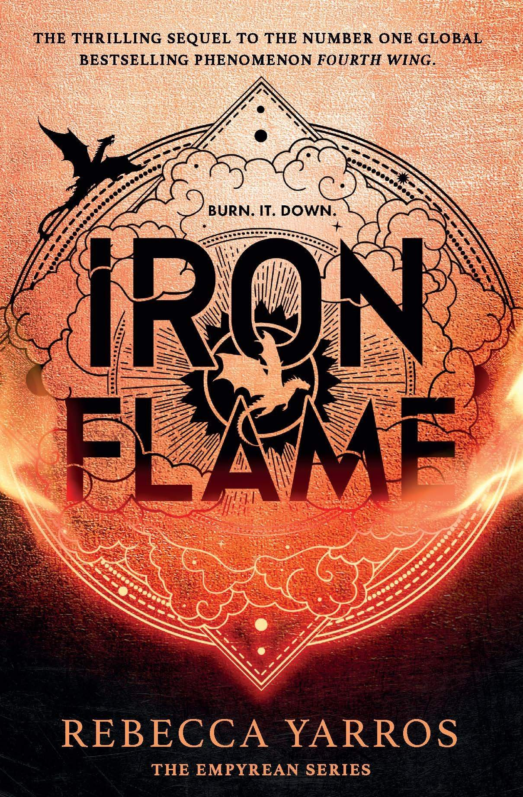

Iron Flame

˗ˏˋ ★ ★ ★ ★ ˎˊ˗
I thought this book was quite good and I enjoyed the politics. I didn't love how it was written again because I just found it a bit cringey at times and it just wasn't written very well. The ideas made up for it though.
I liked the storyline of Violet choosing between her family's legacy and standing up for her country with the rebellion. I also really liked the role of the Venin as I thought they were interesting characters.
I liked the time at the war college and how her relationship developed with Xaden. The physical challenges during her time at Basgiath was very interesting to read about but I feel like it just kept talking about how small and fragile she is. I did enjoy reading about her and Xaden's forbidden relationship though. I loved their emotional bond and how much tension there is between them.
I liked learning more about the Venin and the history of Navarre. It added so much more to the storyline and was really interesting to read about.
I liked watching Violet harness her powers from both Andarna and Tairn. I liked watching her character and power develop throughout the book.
I liked the final battle as it was very intriguing and page turning. I enjoyed the sacrifice of Violet's mum and the twists and turns throughout the battle. I was very shocked and confused when Xaden turned venin. I did not like this plot twist as I found it kind of bad and unnecessary.
Overall the book was okay and I liked most of it. The ending was not to my liking and the writing style wasn't my favourite but it was okay.
Write a Review